All Clans
Base Game & Definitive Edition
-
StagEconCarry
A fame- and economy-focused clan that starts with extra resources and scales through expansion and prestige. Strong for steady growth and straightforward macro play.
-
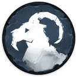
GoatEconSupport
A food and sustain clan that thrives on feasts and resource bonuses, making it highly resilient in harsh conditions. Excellent for stable economies and long games.
-

WolfClearMilitary
An aggressive clan that gains food and bonuses from killing animals and fighting, with reduced upkeep for military units. Designed for early clearing and constant combat pressure.
-

RavenScoutSupport
A trade and exploration clan that uses ships, commerce, and mercenary raids to generate wealth and pressure enemies from afar. Strong in economy with opportunistic aggression.
-
BearEconClear
A defensive clan that thrives in winter, with strong resistance and a powerful bear companion. Excels at holding territory and surviving harsh conditions.
-
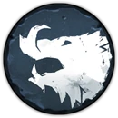
BoarEconSupport
A lore-focused clan that can peacefully expand into wildlife zones and gains bonuses from knowledge. Encourages efficient, low-conflict growth.
-
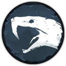
SnakeScoutMilitary
A stealth and sabotage clan that ignores fame, steals knowledge, and uses abilities like scorched earth to disrupt enemies. Focuses on guerrilla tactics rather than direct fights.
-
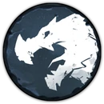
DragonEconCarry
A unique clan that uses thralls and sacrifice mechanics to fuel powerful units and abilities. High-risk, high-reward with unconventional economy.
-
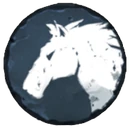
HorseEconSupport
An economy-focused clan that specializes in mining, forging, and upgrading through unique smith mechanics. Strong infrastructure leads to long-term efficiency.
-
KrakenEconMilitary
A coastal clan that gains power from the sea and sacrifices, using unique mechanics and spectral units. Strong scaling clan with unconventional gameplay.
-
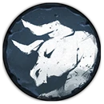
OxEconCarry
A slow-scaling clan centered around a powerful warchief and late-game strength. Trades early speed for overwhelming late-game military power.
-
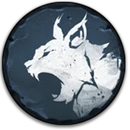
LynxClearCarry
A hunting-focused clan that specializes in ranged units and controlling wildlife for resources. Excels at map control through tracking and efficient clearing.
-
OwlScoutEcon
A knowledge-focused clan that emphasizes lore, relics, and long-term planning. Best for players who prefer strategic buildup over early aggression.
-

EagleClearScout
An exploration-driven clan that gains bonuses from scouting and discovering the map early. Provides strong vision and early-game advantages.
-
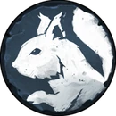
SquirrelEconSupport
A support-oriented clan that boosts economy and allies through cooking and resource bonuses. Excels in team play and sustaining strong economies over time.
-
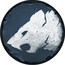
RatEconMilitary
A high-risk economic clan that pushes production and population beyond normal limits at the cost of health. Rewards aggressive macro and constant resource management.
-
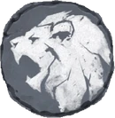
LionEconMilitary
A structured military clan with strong unit organization and upgrades tied to faith and hierarchy. Focuses on disciplined armies and direct combat strength.
-

HoundClearMilitary
A combat-focused clan that evolves units through fighting and absorbing souls, replacing traditional military systems. Encourages constant aggression and unit progression.
-
TurtleEconSupport
A defensive clan focused on fortification and endurance, trading speed for strong protection and stability. Best suited for slow, controlled expansion and holding territory.
-
StoatEconSupport
A flexible, balanced clan that mixes economy and military tools without specializing heavily in one area. Ideal for adaptable playstyles and reacting to the map.
-
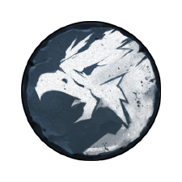
HippogriffEconMilitary
A mobility-focused clan that emphasizes fast movement and flexible positioning across the map. Ideal for reactive and map-wide strategies.